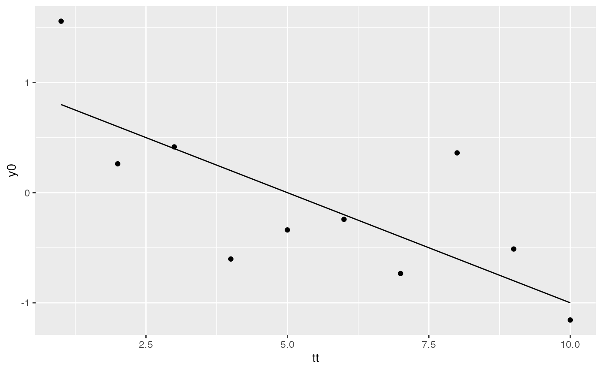

dlmextra-intro.RmdThe dlmextra package (located at [https://github.com/hojsgaard/dlmextra]) enhances the dlm package (see [https://cran.r-project.org/web/packages/dlm/index.html]) by providing extra functionality. Functions from dlm are indicated with ::, e.g. dlm::dlmModReg. Functions from dlmextra are not indicated in any special way. Thereby it should be possible to see what comes from where. Most issues adressed in dlmextra relate to models with time varying components. Please do report back on problems with dlmextra.
tt <- seq(1, 10, by=1)
beta <- c(1, -.2)
dat <- data.frame(tt=tt)
M <- model.matrix(~ tt, data=dat)
dat$mu <- M %*% beta
set.seed(112021)
dat$y0 <- as.numeric(dat$mu) + rnorm(length(dat$mu), sd=.5)We have
head(dat)## tt mu y0
## 1 1 0.8 1.557
## 2 2 0.6 0.262
## 3 3 0.4 0.416
## 4 4 0.2 -0.602
## 5 5 0.0 -0.339
## 6 6 -0.2 -0.242
head(M)## (Intercept) tt
## 1 1 1
## 2 1 2
## 3 1 3
## 4 1 4
## 5 1 5
## 6 1 6
pt0 <- ggplot(data=dat) + geom_point(aes(tt, y0)) +
geom_line(aes(x=tt, y=mu))
pt0
dlm
A dynamic regression model has the form \[\begin{align} y_t &= F_t \theta_t + v_t; & v_t \sim N(0, V_t)\\ \theta_t &= G_t \theta_{t-1} + w_t; & w_t \sim N(0,W_t) \end{align}\] where the matrix \(F_t=[1, t]\) is time dependent whereas \(G_t\), \(V_t\) and \(W_t\) are not (notice that \(G_t=I\)).
## dynamic linear model (dlm)Several issues arise with models containing time dependent components. (These issues do not appear if a model only contains constant components).
The \(F_t\) matrix is constructed on the fly on the basis of the model matrix and the specifications in JFF:
dlm::FF(drm1)## [,1] [,2]
## [1,] 1 1
dlm::JFF(drm1)## [,1] [,2]
## [1,] 1 2
FFeval(drm1, 4) ## or## [,1] [,2]
## [1,] 1 4
getdlm(drm1, "F", 4)## [,1] [,2]
## [1,] 1 4Imagine that we have only seen the first observations:
nseen <- 4
dat$y <- dat$y0
dat$y[-(1:nseen)] <- NA
dat$y## [1] 1.557 0.262 0.416 -0.602 NA NA NA NA NA NAFiltering works because the time varying components can be constructed on the fly because the number of rows in the design matrix is at least the same as the length of \(y\) (including the missing values in \(y\)). We have seen this done above for \(F_t\).
Notice that there are two underlying engines for the filtering. Fortunately we get same results, but that is not always the case as we shall see below.
fm1C <- dlm::dlmFilter(dat$y, drm1) ## Filtering based on C code; default
fm1R <- dlm::dlmFilter(dat$y, drm1, debug=T) ## Filtering based on R code
fm1C$f## [1] 0.8000 1.3803 0.2393 0.0835 -0.8665 -1.2950 -1.7234 -2.1519 -2.5803
## [10] -3.0088
fm1R$f## [1] 0.8000 1.3803 0.2393 0.0835 -0.8665 -1.2950 -1.7234 -2.1519 -2.5803
## [10] -3.0088Consider filtering data vector \(y\) vector with fewer elements than the number of rows in the model matrix:
yshort <- dat$y[1:5]
ylong <- c(dat$y, NA, NA)
fm2C <- dlm::dlmFilter(yshort, drm1) ## Using C code
fm2R <- dlm::dlmFilter(yshort, drm1, debug=T) ## Using R code
fm2C$f## [1] 0.800 1.320 0.823 0.659 0.186
fm2R$f## [1] 0.8000 1.3803 0.2393 0.0835 -0.8665When filtering is based on R code, we get results consistent with what happened when filtering the full \(y\) vector; with C code we get something else. This behaviour does not seem to be documented anywhere.
Next consider filtering a vector with more elements than the number of rows in the model matrix. (There is no information in the supplied model matrix for generating \(F_t\) for \(t>6\)). The R based engine correctly captures the problem; the C based engine does not. This behaviour does not seem to be documented anywhere.
fm3C <- try(dlm::dlmFilter(ylong, drm1)) ## Using C code
fm3R <- try(dlm::dlmFilter(ylong, drm1, debug=T)) ## Using R code## Error in mod$X[i, mod$JFF[, 3]] : subscript out of bounds
names(fm3C)## [1] "y" "mod" "m" "U.C" "D.C" "a" "U.R" "D.R" "f"
fm3R## [1] "Error in mod$X[i, mod$JFF[, 3]] : subscript out of bounds\n"
## attr(,"class")
## [1] "try-error"
## attr(,"condition")
## <simpleError in mod$X[i, mod$JFF[, 3]]: subscript out of bounds>dlmxFilter
Based on these findings, I recommend to stay on the safe side and always set debug=T. (Fast C code is nice; correct results are nicer.) In dlmextra, the dlmxFilter function only uses the R code, so sticking to that function should make you safe.
names(fm1R)## [1] "y" "mod" "m" "U.C" "D.C" "a" "U.R" "D.R" "f"As shown above, a filtered object contains data y, the model object mod itself, the slots m, a, f (refer to the book for these quantities) but not R and C. However, these quantities can be constructed / extracted as:
sel <- 1:2
getdlm(fm1R, "m", select=sel)## [,1] [,2]
## [1,] 1.00 -0.2000
## [2,] 1.26 0.0601
getdlm(fm1R, "sdC", select=sel) # Sqrt of diagonals of C## [,1] [,2]
## [1,] 1.00 1.00
## [2,] 0.85 0.85
getdlm(fm1R, "a", select=sel)## [,1] [,2]
## [1,] 1.00 -0.2000
## [2,] 1.26 0.0601
getdlm(fm1R, "sdR", select=sel) # Sqrt of diagonals of R## [,1] [,2]
## [1,] 1.049 1.049
## [2,] 0.907 0.907
getdlm(fm1R, "f", sel=sel)## [1] 0.80 1.38List of matrices with \(G\) and \(R\):
getdlm(fm1R, "C", select=sel)## [[1]]
## [,1] [,2]
## [1,] 1 0
## [2,] 0 1
##
## [[2]]
## [,1] [,2]
## [1,] 0.722 -0.378
## [2,] -0.378 0.722
getdlm(fm1R, "R", select=sel)## [[1]]
## [,1] [,2]
## [1,] 1.1 0.0
## [2,] 0.0 1.1
##
## [[2]]
## [,1] [,2]
## [1,] 0.822 -0.378
## [2,] -0.378 0.822The issue about using R or C code also arises in connection with estimation. Say we want to estimate the unknown variances:
V(drm1)## [,1]
## [1,] 1
W(drm1)## [,1] [,2]
## [1,] 0.1 0.0
## [2,] 0.0 0.1The way ahead is along these lines. Notice that the number of rows in the model matrix is the same as the number of elements in \(y\). Notice that there are two underlying engines for estimation. Fortunately we get same results, but that is not always the case as we shall see below.
build_obj <- function(p, obj){
V(obj) <- exp(p[1])
diag(W(obj)) <- exp(p[2:3])
obj
}
p <- c(0.1, 0.2, 0.3)
fit1C <- dlmMLE(dat$y, parm=p, build=build_obj, obj=drm1) ## Using C code
fit1R <- dlmMLE(dat$y, parm=p, build=build_obj, obj=drm1, debug=T) ## Using R code
fit1C$par## [1] -1.72 -19.19 -22.11
fit1R$par## [1] -1.72 -19.19 -22.11Consider estimation with at data vector \(y\) vector with fewer elements than the number of rows in the model matrix:
fit2C <- dlmMLE(yshort, parm=p, build=build_obj, obj=drm1) ## Wrong!
fit2R <- dlmMLE(yshort, parm=p, build=build_obj, obj=drm1, debug=T)
fit2C$par## [1] -1.76 -1.43 -1.24
fit2R$par## [1] -1.72 -19.19 -22.11When estimation is based on R code, we get results consistent with what happened when estimating with the full y vector; with C code we get something else. This behaviour does not seem to be documented anywhere.
Next consider estimation with a vector with more elements than the number of rows in the model matrix. (There is no information in the supplied model matrix for generating \(F_t\) for \(t>6\)). The R based engine correctly captures the problem; the C based engine does not. This behaviour does not seem to be documented anywhere.
fit3C <- try(dlmMLE(ylong, parm=p, build=build_obj, obj=drm1))
fit3R <- try(dlmMLE(ylong, parm=p, build=build_obj, obj=drm1, debug=T))## Error in mod$X[i, mod$JFF[, 3]] : subscript out of bounds
fit3C$par## [1] -1.29 -15.53 -6.74
fit3R## [1] "Error in mod$X[i, mod$JFF[, 3]] : subscript out of bounds\n"
## attr(,"class")
## [1] "try-error"
## attr(,"condition")
## <simpleError in mod$X[i, mod$JFF[, 3]]: subscript out of bounds>dlmxMLE
Based on these findings, I recommend to stay on the safe side and always set debug=T. (Fast C code is nice; correct results are nicer.) In dlmextra, the dlmxMLE function only uses the R code, so sticking to that function should make you safe. The dlmxMLE function also check that dimension of \(y\) and the model matrix match.
One feature of dlmxMLE is that the function returns the model object with the estimated parameters.
xx <- dlmxMLE(yshort, parm=p, build=build_obj, obj=drm1)
xx$par## [1] -1.72 -19.19 -22.11
exp(xx$par)## [1] 1.79e-01 4.65e-09 2.49e-10
zz <- xx$mod
V(zz)## [,1]
## [1,] 0.179
W(zz)## [,1] [,2]
## [1,] 4.65e-09 0.00e+00
## [2,] 0.00e+00 2.49e-10The dlm::dlmForecast function does not work with non-constant models, i.e. models where \(F\), \(G\), \(V\) or \(W\) are vary with time. The problem is that if one of the components is time varying then this compenent needs to be constructed on the fly as explained above.
try(dlm::dlmForecast(fm1R, nAhead=length(tt) - nseen))## Error in dlm::dlmForecast(fm1R, nAhead = length(tt) - nseen) :
## dlmForecast only works with constant modelsdlmxForecast
However, forecasting is nothing but filtering with missing data. Hence, as long as the model matrix in the model object has “enough rows” for constructing time dependent quantities we are fine and can make the necessary computations as illustrated above:
v <- dlmxForecast(fm1R, nAhead=length(tt)-nseen, offset=nseen)## dlmxForecast.dlmFiltered
## List of 3
## $ m.start: num [1:2] 1.276 -0.428
## $ nAhead : num 6
## $ offset : num 4
ci <- confint(v)
ci## fit lwr upr xrow
## 1 -0.867 -5.20 3.47 5
## 2 -1.295 -7.63 5.04 6
## 3 -1.723 -10.28 6.83 7
## 4 -2.152 -13.12 8.81 8
## 5 -2.580 -16.13 10.97 9
## 6 -3.009 -19.30 13.28 10Now we can plot with prediction intervals etc.
ci$tt <- tt[ci$xrow]
pt1 <- pt0 +
geom_vline(xintercept=tt[nseen], col="red") +
geom_line(aes(x=tt, y=fit), data=ci, col="purple") +
geom_errorbar(aes(x=tt, ymin=lwr, ymax=upr), data=ci)
pt1